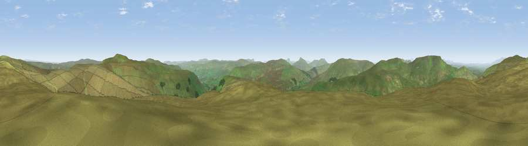

Sails
#5952 in England · top 12% of its area beats it · near CotterdaleWhere it is
The exact computed spot (SD 80825 96575). Click the marker for map links.
The view, rendered

A 360° render of this exact spot computed from the terrain model, tree cover and land cover — summer colours, afternoon light, calibrated against photographs of famous viewpoints. Real trees, hedges and buildings will differ in detail.
The panorama
Grey silhouette: terrain skyline in each direction (720 bearings, Earth curvature and refraction included). Dashed green: skyline with trees (+15 m) and buildings (+8 m) as obstacles. Blue strip: how far the ground is visible on each bearing.
Where the view opens
Wedge length = distance to the farthest visible ground on that bearing (vegetation-aware). Rings at 10, 25 and 50 km.
What fills the view
99% grassland · 1% woodland
Angular shares of the visible panorama (visual magnitude), not map area. Landscape diversity 0.04 (0–1 Shannon).
Key numbers
More beautiful places nearby
The staircase of upgrades: each row has a higher view potential than everything closer. Driving times are estimates from straight-line distance, calibrated against real road routing — check an actual route before setting out.
| Place | Direction | Drive | Score |
|---|---|---|---|
| Viewpoint near Cotterdale | N · 3 km | ~6 min | 71.2 |
| Viewpoint c10001_7600 | NNW · 4 km | ~8 min | 73.3 |
| Great Shunner Fell | E · 4 km | ~10 min | 74.4 |
| Viewpoint c10024_7603 | N · 5 km | ~10 min | 76.9 |
| Calders | W · 14 km | ~25 min | 79.0 |
| Whernside | SSW · 16 km | ~29 min | 79.9 |
| Viewpoint near Bampton | WNW · 38 km | ~57 min | 80.4 |
| Ill Bell | WNW · 39 km | ~58 min | 80.9 |
54.36433, -2.29661 · source: dobih hill · position refined by local search. Computed location — check access rights before visiting.